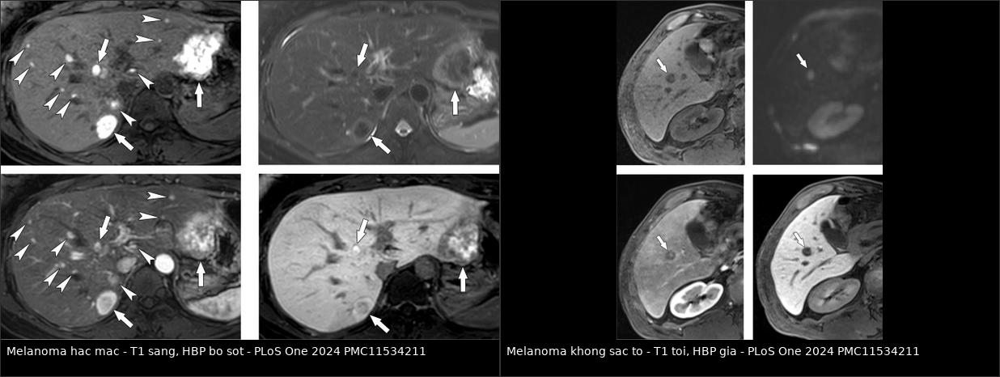
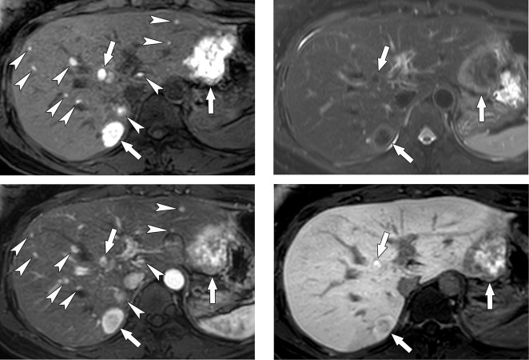
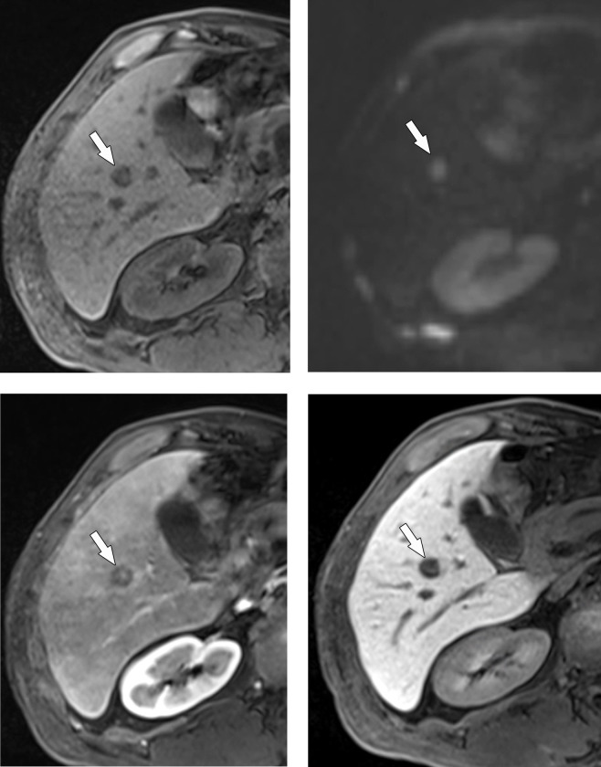
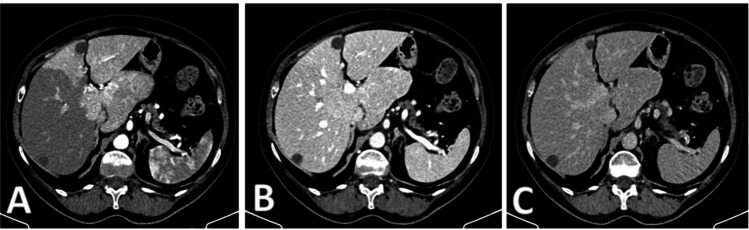
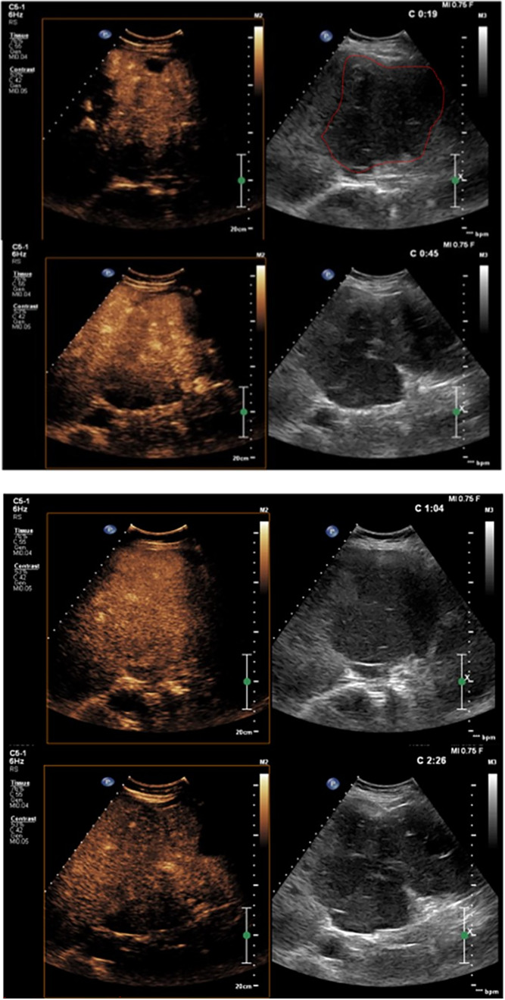
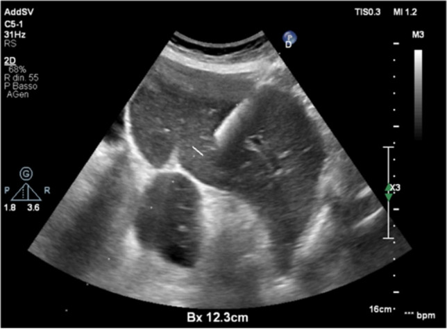

1503 — Di căn gan của melanoma hắc mạc: theo dõi thế nào, nốt 8 mm làm gì, khi nào MRI/PET và sinh thiết / Hepatic metastases from uveal melanoma: surveillance, small nodules and when to biopsy
Tags: pattern:not-gan pattern:nhieu-o pattern:t1-sang pattern:di-can pattern:ngam-dong-mach vung:gan vung:mat protocol:MRI-gan-DWI protocol:MRI-gan-gadoxetat protocol:CT-bung-co-can-quang protocol:sie-u-am-gan protocol:PET-FDG score:RECIST-1.1 incidentaloma:u-mau-gan
Mức chắc chắn (certainty): tổng hợp y văn (literature synthesis) — số liệu đọc trực tiếp từ toàn văn: hướng dẫn ESMO–EURACAN 2026 (PMC13131131), đoàn hệ theo dõi 1.086 bệnh nhân của Anh (PMC13270131), nghiên cứu 67 bệnh nhân/254 di căn trên MRI gadoxetate (PMC11534211), 65 bệnh nhân MRI gan mật tiên lượng (PMC13124272), tổng quan điều trị (PMC12485227), định lượng melanin trên MRI (PMC8198670), nomogram 224 bệnh nhân (PMC6627813), ca lâm sàng có sinh thiết dưới siêu âm (PMC11496420), PET/CT (PMC12553292), thể tích gan sau HAI (PMC11604257). Nhóm không có bệnh nhân của mình; chỗ chưa đủ chắc ghi "chưa rõ". Không ghi tên tác giả — attribution dùng tạp chí + năm + PMCID.
Vị trí trong thư viện: 1497 phủ tái phát tại chỗ sau xạ; 448 và 1486 phủ khối hắc mạc ban đầu; bài này trả lời câu hỏi sau khi mắt đã yên: theo dõi gan bằng gì, bao lâu, và một nốt 8 mm nghĩa là gì?
Câu chốt: Melanoma hắc mạc không di căn theo kiểu "rải khắp nơi" — 87–90% ca di căn có gan là ổ đầu tiên, và 93% ca di căn xuất hiện trong 5 năm đầu. Ba con số phải thuộc: (1) siêu âm gan nhạy 96% nhưng PPV chỉ 45% → mọi nốt nghi ngờ phải chuyển MRI; (2) MRI gadoxetate phát hiện 98,8% bằng chuỗi hình thái nhưng pha gan mật chỉ 76,0% — bỏ sót 98,4% là di căn melanoma hắc mạc, ≤ 1 cm, T1-sáng; (3) khi đã có di căn, sống trung vị ~1 năm, sống 2 năm 8%, và tăng thể tích gan ≥ 10% sau điều trị tương ứng sống 6,6 vs 15,9 tháng.
1. Tổng quan bệnh học – cơ chế hình ảnh
1.1 Vì sao gan là ổ đầu tiên — và vì sao "mắt yên" không có nghĩa là "bệnh yên"
- Melanoma hắc mạc (uveal melanoma) là ung thư nội nhãn nguyên phát thường gặp nhất ở người lớn; ~90% xuất phát từ hắc mạc, 6% thể mi, 4% mống mắt. U không có mạch bạch huyết trong nhãn → lan theo đường máu ngay từ đầu.
- Dù kiểm soát tại chỗ > 90%, gần một nửa bệnh nhân vẫn xuất hiện di căn; trong số có di căn, ~87% có gan là ổ đầu tiên (PMC11496420), một số chuỗi ghi ~90% (PMC12485227).
- Thời điểm: đoàn hệ 1.086 bệnh nhân (Sheffield 2006–2021): 29% (315 người) di căn, 93% trong số đó được phát hiện trong 5 năm sau điều trị mắt; "số ca cần chụp để tìm 1 ca" tăng mạnh sau mốc 5 năm (PMC13270131). Di căn muộn vẫn có nhưng hiếm và gắn với kiểu gen đặc thù (NST 3 bình thường, thêm bản sao 8q, GEP class 1, PRAME dương).
- Sinh học phân tử quyết định nhịp theo dõi: nguy cơ cao gắn với mất một bản sao/isodisomy NST 3, đa bản sao 8q, GEP class 2, bất hoạt BAP1 (PMC13131131). Đây là lý do cùng một "melanoma hắc mạc" mà lịch chụp khác nhau hoàn toàn.
- Tiên lượng khi đã di căn: sống trung vị ~1 năm, sống 2 năm 8%; các chuỗi ghi 3–30 tháng (PMC12485227, PMC12896752). Nomogram 224 bệnh nhân: sống 6/12/24 tháng = 88% / 68% / 26%; bốn yếu tố xấu độc lập: khoảng không bệnh < 6 tháng** (HR 3,39), **> 10 ổ di căn (HR 3,95), tổng diện tích u lớn nhất > 1.200 mm² (HR 2,47), LDH > 1,5 × giới hạn trên (HR 3,72); C-statistic 0,71 (PMC6627813).
1.2 TẠI SAO di căn melanoma lại T1-SÁNG — và vì sao điều đó phá vỡ mọi "quy tắc di căn"
- Melanin là chất thuận từ (paramagnetic): các gốc tự do bền trong melanin rút ngắn T1 của mô → trên chuỗi T1 không cản từ, khối sáng hơn gan. Máu bán cấp (methemoglobin) trong u cũng rút ngắn T1, nên u xuất huyết cũng sáng.
- Định lượng được: trong 254 di căn, 68,9% T1 cao; riêng nhóm có nguồn gốc mắt là 72,1% (158/219) so với melanoma niêm mạc/da 48,6% (PMC11534211). Hệ quả trực tiếp: "di căn gan = giảm tín hiệu T1" không đúng với melanoma hắc mạc.
- Melanin cũng làm T2 thay đổi hai chiều: hiệu ứng thuận từ làm giảm T2, còn hoại tử/dịch làm tăng T2 → tín hiệu T2 không đồng nhất. Trong 254 di căn: T2 cao 55,5%, T2 thấp 16,1%; nhóm mắt T2 cao 50,2%, T2 thấp 17,4% (PMC11534211). Vì vậy T2 một mình không loại trừ và không chốt.
- Kích thước nhỏ là đặc trưng: trung bình 1,7 cm, 43,7% ≤ 1 cm. U nhỏ + T1 sáng + ít hoại tử = tổn thương "hòa vào gan" trên nhiều chuỗi — đây là gốc của mọi bẫy trong bài.
1.3 TẠI SAO pha gan mật (hepatobiliary phase, HBP) lại BỎ SÓT chính di căn melanoma
- Gadoxetate disodium là chất cản quang lưỡng tính: một phần được tế bào gan bắt qua OATP1B1/B3 rồi thải vào đường mật; pha gan mật chụp ~20 phút sau tiêm. Mô không có tế bào gan (di căn, nang, máu tụ) không bắt thuốc → giảm tín hiệu so với nhu mô gan sáng.
- Nhưng HBP vẫn là chuỗi T1: một tổn thương đã T1-sáng vì melanin có thể đồng tín hiệu hoặc tăng tín hiệu trên nền gan sáng, nhất là khi nhỏ và ít hoại tử. Số liệu: trong 254 di căn, HBP giảm tín hiệu 55,5%, tăng 15,4%, đồng tín hiệu 5,1%, không thấy 24,0%.
- 61 tổn thương không thấy trên HBP: 98,4% là melanoma hắc mạc, 90,2% ≤ 1 cm, 98,4% T1-sáng, 90,2% không hạn chế khuếch tán (PMC11534211). Nói cách khác, HBP bỏ sót đúng nhóm bệnh nhân của bài này.
- Độ nhạy phát hiện: hình thái 98,8%, động học 97,6%, HBP 76,0%, DWI 65,7%. Kết luận của chính nhóm tác giả: HBP ít lợi thế trong phát hiện di căn melanoma. Không được dùng HBP để loại trừ.
1.4 TẠI SAO ngấm mạnh thì động mạch (arterial hyperenhancement) — và vì sao dễ bị gọi là HCC
- Di căn tạo mạng mạch nuôi tân tạo, phần lớn nhận máu động mạch gan (25% cung cấp máu gan nhưng là nguồn chính của u) → ngấm mạnh ở thì động mạch, sau đó thải thuốc khi nhu mô gan ngấm ở thì cửa/muộn.
- Số liệu: 80,3% di căn ngấm mạnh thì động mạch; 14,6% lại giảm tín hiệu — tức khoảng 1/7 ca "đi ngược quy tắc" (PMC11534211). Vì vậy không có tín hiệu động mạch nào là bắt buộc.
- Cạm bẫy: ngấm động mạch + thải thuốc là bộ ba của HCC. Ở bệnh nhân melanoma không xơ gan, tổn thương mới ngấm động mạch + thải thuốc phải được coi là di căn cho đến khi chứng minh ngược; LI-RADS không dành cho di căn và không được áp vào bệnh cảnh này.
1.5 TẠI SAO DWI hữu ích nhưng "teo" ở nốt nhỏ
- Di căn đặc, mật độ tế bào cao → nước khuếch tán hạn chế → DWI sáng, ADC thấp. Nhưng với ổ ≤ 1 cm, độ nhạy DWI chỉ 50,5% so với 86,7% ở ổ > 1 cm (P < 0,001); toàn bộ là 65,7% (PMC11534211). DWI là chuỗi bổ trợ, không phải chuỗi sàng lọc.
1.6 TẠI SAO siêu âm "nhạy 96%" mà vẫn không đủ
- Siêu âm bụng rẻ, không bức xạ, nhưng PPV chỉ 45%: trong 100 nốt bị gọi là nghi ngờ, hơn một nửa lành (u máu, nang, FNH, vùng gan thoái hóa mỡ). Độ đặc hiệu được trích ~85% (PMC13131131, PMC13270131). Hệ quả thực hành: siêu âm là cửa vào, MRI là cửa chốt — không bao giờ kết luận "không di căn" chỉ bằng siêu âm, và cũng không sinh thiết một nốt chỉ vì nó "echo bất thường".
- Trong gan nhiễm mỡ, nốt di căn có thể đồng âm hoặc tăng âm giả u máu; siêu âm càng kém tin cậy.
1.7 TẠI SAO PET/CT không phải công cụ theo dõi
- FDG-PET/CT có độ nhạy 41–88% cho di căn gan, tụt còn 11% với ổ nhỏ mà MRI phát hiện được; bỏ sót tới 65% tổn thương gan (PMC13131131). Trong 55 bệnh nhân, phát hiện 103/128 (80,5%) ổ gan, nhưng 100% ổ xương, hạch, phổi — tức PET mạnh ở ngoài gan, yếu ở trong gan (PMC12553292).
- Vai trò hợp lý: phân giai đoạn ngoài gan khi đang cân nhắc mổ/can thiệp, không dùng thay MRI gan.
2. Mẫu hình + chẩn đoán phân biệt theo vị trí (Gamut)
- Mẫu A — nhiều nốt nhỏ T1-sáng, rải hai thùy, ngấm động mạch, HBP đồng/giảm tín hiệu. Gamut: di căn melanoma hắc mạc · di căn melanoma khác · xuất huyết cũ trong u/nang · Lipiodol tồn lưu sau TACE · nốt gan thoái hóa mỡ đảo ngược (vùng gan lành trong gan nhiễm mỡ). Chốt: bối cảnh + nhiều ổ + ngấm động mạch + so phim.
- Mẫu B — nốt T1-tối, T2-sáng, hạn chế khuếch tán, ngấm viền/vành, HBP giảm. Gamut: di căn melanoma không sắc tố/niêm mạc · di căn đại trực tràng/tụy/vú · HCC · cholangiocarcinoma trong gan · áp-xe. Chốt: bối cảnh ung thư + DWI + HBP; HCC chỉ đặt ra khi có gan xơ.
- Mẫu C — "bia bắn" (target sign): viền ngấm + trung tâm hoại tử. Gamut: di căn (mọi nguồn) · áp-xe · cholangiocarcinoma · di căn đã điều trị. Chốt: viền mỏng đều + nhiều ổ + bối cảnh = di căn; khí trong ổ + sốt = áp-xe.
- Mẫu D — gan to, bờ nốt, co kéo bao, teo thùy sau nhiều đợt điều trị. Gamut: giả xơ gan sau điều trị di căn (pseudocirrhosis) · xơ gan thật · bệnh gan do thuốc. Chốt: không có xơ gan trước đó + tiền sử di căn đã teo; xem 1648.
- Mẫu E — một khối lớn không đồng nhất, hoại tử trung tâm, xâm lấn. Gamut: di căn lớn · HCC thể khối · cholangiocarcinoma · sarcoma. Chốt: sinh thiết nếu hình ảnh không đặc hiệu (ca nguyên văn bên dưới).
- Mnemonic "MELANIN": Melanin → T1 sáng · Enhancing arterial · Liver-only (87–90%) · Atypical nhỏ < 1 cm · Nodules nhiều ổ hai thùy · Imaging = MRI + DWI · Never rule out bằng HBP.
3. Bảng so sánh phân biệt (ma trận đối chiếu)
| Thực thể (entity) | Hình ảnh điển hình | Chốt vào (rule-in) | Chốt loại (rule-out) | Gợi ý xác nhận |
|---|---|---|---|---|
| Di căn melanoma hắc mạc (sắc tố) | Nhiều nốt T1 sáng (72,1%), T2 cao hoặc thấp, ngấm động mạch 80,3%, HBP đồng/giảm, DWI hạn chế 61,6% | Bối cảnh melanoma hắc mạc + nhiều nốt + T1 sáng + ngấm động mạch; nốt mới so với phim cũ | T2 rất sáng + ADC cao + ngấm nốt ngoại vi hướng tâm → u máu; giảm tín hiệu HBP đơn thuần không loại trừ | MRI động học + DWI; so phim; sinh thiết nếu đơn độc/không điển hình |
| Di căn melanoma không sắc tố/niêm mạc | T1 tối, T2 cao, hạn chế khuếch tán 91,4%, ngấm động mạch, HBP giảm | T1 tối + T2 cao + DWI hạn chế + HBP giảm ở bệnh nhân ung thư | T1 sáng + HBP đồng tín hiệu → nghĩ melanotic/không phải nhóm này | MRI + sinh thiết nếu cần mô học |
| U máu gan (hemangioma) | Siêu âm tăng âm, T2 rất sáng, ADC cao, ngấm nốt ngoại vi → lấp đầy, không thải thuốc | T2 "bóng đèn" + ADC cao + fill-in hướng tâm | T1 sáng + hạn chế khuếch tán + thải thuốc → không phải u máu | MRI; theo dõi ổn định nhiều năm |
| Nang gan | 0–15 HU, trống âm, T1 tối/T2 rất sáng, không ngấm, ADC rất cao | Không ngấm hoàn toàn + ADC cao + bờ mỏng | Ngấm viền/dày thành → không phải nang đơn thuần | Siêu âm/CT đủ |
| FNH / nốt FNH-like sau hóa trị | Ngấm động mạch mạnh, không thải thuốc, HBP đồng/tăng tín hiệu, sẹo trung tâm | HBP tăng/đồng tín hiệu (khác di căn) | T1 sáng + HBP giảm + nhiều ổ mới → không phải FNH | MRI gadoxetate; xem 1733 |
| HCC | Chủ yếu trên nền gan xơ: ngấm động mạch + thải thuốc + vỏ, có thể T1 sáng do mỡ/máu | Nền gan xơ + APHE + washout + vỏ (LI-RADS) | Gan không xơ + bối cảnh melanoma → không áp LI-RADS | CT/MRI 4 thì; AFP không đủ |
| Áp-xe gan | Ổ dịch vỏ dày ngấm viền, khí trong ổ, phù quanh | Sốt + CRP cao + khí trong ổ + phù quanh | Không sốt, nhiều ổ nhỏ, bờ mỏng → nghĩ di căn | Chọc hút/cấy; theo dõi |
| Lipiodol/máu tụ sau can thiệp | Tăng đậm độ trên CT không cản quang, T1 sáng, không ngấm, bờ theo vùng đã điều trị | Không ngấm + hình dạng khớp vùng can thiệp cũ | Ngấm động mạch + to ra → không phải Lipiodol | So CT không cản quang với MRI; theo dõi |

Trái: nhiều ổ T1-sáng (đầu mũi tên) chỉ thấy một phần trên T2 và pha gan mật — HBP bỏ sót. Phải: một ổ melanoma niêm mạc điển hình T1-tối, DWI sáng, HBP giảm. Nguồn: PLoS One 2024, PMC11534211, CC BY 4.0; ảnh ghép letterbox.Đọc đúng "nốt T1 sáng" trong gan
- Ba câu hỏi theo thứ tự: (1) nốt ngấm động mạch không? (2) trên ADC có thật sự hạn chế khuếch tán không (loại T2 shine-through)? (3) trên HBP nốt giảm tín hiệu hay đồng tín hiệu? Câu trả lời "T1 sáng + ngấm động mạch + ADC thấp" nghiêng mạnh về di căn melanotic; "T1 sáng + không ngấm + ADC cao" nghiêng về máu tụ/Lipiodol.
- Không có "nốt T1 sáng lành tính" mặc định. Trong bối cảnh melanoma hắc mạc, nốt T1 sáng mới là di căn cho đến khi có bằng chứng khác.
4. Protocol chụp + hệ phân độ/điểm chuẩn hóa
4.1 Theo dõi: ai, bằng gì, bao lâu
| Nguồn | Nguy cơ thấp | Nguy cơ cao |
|---|---|---|
| ESMO–EURACAN 2026 (PMC13131131) | Siêu âm gan 6–12 tháng/lần, ≥ 5 năm; bất kỳ bất thường → MRI gan | MRI gan 4–6 tháng/lần, ≥ 10 năm |
| NCCN (dẫn qua PMC13270131) | Theo nguy cơ | 3–6 tháng/lần trong 5 năm đầu |
| Melanoma Focus (Anh) | — | 10 năm: 6 tháng/lần trong 5 năm đầu, sau đó hằng năm |
| Scotland | — | MRI gan 6 tháng/lần × 10 năm |
- Nguy cơ cao = mất/isodisomy NST 3, đa bản sao 8q, GEP class 2, bất hoạt BAP1, giai đoạn T cao, u thể mi (PMC13131131, PMC13270131).
- Vì sao không "chụp mãi": 93% di căn xảy ra trong 5 năm; sau mốc này hiệu suất giảm rõ. Chi phí tham khảo: MRI ~150 £ vs siêu âm ~38 £ (PMC13270131) — lý do các nước chọn siêu âm cho nhóm thấp.
- Xét nghiệm máu không thay hình ảnh: LDH và men gan độ nhạy thấp, không phát hiện sớm (PMC13131131); LDH chỉ có giá trị tiên lượng khi đã có di căn.
4.2 Giao thức MRI gan "đúng việc" cho melanoma
- T2 fat-sat (bắt tổn thương nang/hoại tử, u máu), DWI b = 50/400/800 + ADC, T1 3D động học trước/động mạch/cửa/muộn, ± pha gan mật 20 phút nếu dùng gadoxetate (0,025 mmol/kg).
- Bắt buộc đọc động học + hình thái trước, HBP sau. Nếu chỉ nhìn HBP, bạn sẽ bỏ 24% tổn thương và 98,4% trong số bỏ sót là đúng bệnh nhân melanoma hắc mạc (PMC11534211).
- CT: chỉ hữu ích khi MRI không có; độ phân giải mô mềm kém hơn, nốt < 1 cm dễ đồng tỷ trọng. Nếu CT bụng có nốt "không rõ", đừng kết luận — chuyển MRI.
- Siêu âm: cửa vào cho nhóm nguy cơ thấp; không dùng để loại trừ. Bất kỳ nốt mới/echo bất thường → MRI.
4.3 Nốt mới trên MRI: ngưỡng và hành động
flowchart TD
A[Melanoma hac mac da dieu tri] --> B{Nguy co cao?}
B -->|Co| C[MRI gan 4-6 thang, ≥ 10 nam]
B -->|Khong| D[Sieu am gan 6-12 thang, ≥ 5 nam]
C --> E[Not moi hoac bat thuong]
D --> E
E --> F{Kich thuoc}
F -->|< 5 mm, khong dac hieu| G[MRI lai 3-4 thang]
F -->|5-10 mm| H[MRI dong hoc + DWI ± HBP]
H --> I{Dac hieu di can?}
I -->|Co| K[Chan doan di can + phan giai doan]
I -->|Khong| L[Sinh thiet hoac theo doi ngan]
F -->|≥ 10 mm| K
K --> M[Dieu tri toan than hoac tai cho]
- < 5 mm: MRI là giới hạn; tổn thương dưới ngưỡng này không đủ để chẩn đoán, kể cả với DWI (độ nhạy ≤ 1 cm chỉ 50,5%). Hành động: MRI lặp 3–4 tháng; nếu to lên/lên tín hiệu → điều trị.
- 5–10 mm: MRI động học + DWI quyết định; sinh thiết nếu tổn thương đơn độc, không điển hình, hoặc cần mô học cho thử nghiệm lâm sàng.
- ≥ 10 mm hoặc nhiều ổ điển hình: chẩn đoán di căn trên hình ảnh; không sinh thiết thường quy nếu đã đủ tiêu chuẩn và đang cân nhắc điều trị toàn thân.
- Phân giai đoạn khi xác nhận di căn: CT/MRI ngực–bụng–chậu; PET/CT khi cần tìm ổ ngoài gan trước mổ/can thiệp (mạnh ở xương/hạch/phổi, yếu ở gan nhỏ).
- Sinh thiết: lõi 18G dưới siêu âm là cách chuẩn (ca PMC11496420); giá trị nhất khi CT và MRI đều không kết luận. Cạm bẫy: mẫu hoại tử, mẫu không đại diện, và gieo tế bào theo đường kim (hiếm nhưng có) — chỉ làm khi kết quả thay đổi điều trị.
4.4 Đánh giá đáp ứng: RECIST không đủ cho gan "di căn lan"
- RECIST 1.1: tổn thương đích ≥ 10 mm (hạch ≥ 15 mm trục ngắn); với bệnh lan tỏa nhiều ổ nhỏ, RECIST dễ ổn định giả.
- Thể tích gan: trong 143 bệnh nhân điều trị HAI, tăng thể tích gan ≥ 10% phân biệt rõ nhóm sống ngắn: 6,6 tháng (PD) vs 15,9 tháng (SD); sống trung vị toàn nhóm 13,5 tháng (PMC11604257). Với gan "phình ra vì u", thể tích nhạy hơn đường kính.
- Đừng ngừng thuốc chỉ vì ảnh không teo: tebentafusp cải thiện sống HR 0,51 (21,7 vs 16,9 tháng) dù tổn thương gần như không nhỏ (PMC13131131). Đáp ứng hình ảnh và lợi ích sống có thể lệch pha.
- Sau TACE/TARE: hoại tử trung tâm + Lipiodol tăng đậm độ trên CT; đánh giá đáp ứng bằng MRI hoặc CT có trừ Lipiodol; đừng gọi vùng hoại tử là "u sống".
5. Biến thể bình thường và cạm bẫy
- Điểm mù HBP (quan trọng nhất): nốt nhỏ T1-sáng có thể đồng tín hiệu trên HBP → đọc là "không có tổn thương". Đây là lý do 24% di căn không thấy trên HBP. Luôn đọc T1 trước tiêm + động học + DWI.
- Siêu âm dương tính giả: u máu, FNH, nang, vùng thoái hóa mỡ; PPV 45%. Không chọc/sinh thiết chỉ vì siêu âm "có nốt".
- PET âm không loại trừ: ổ < 1 cm có thể không bắt FDG; PET bỏ sót tới 65% tổn thương gan. PET dương cũng có thể là nhiễm trùng hoặc ung thư thứ hai.
- Gan nhiễm mỡ: nhu mô gan < 40 HU làm nốt đồng tỷ trọng trên CT; chuyển MRI.
- Giả xơ gan sau điều trị: gan bờ nốt + teo thùy + cổ trướng ở người không xơ gan trước đó — đừng chẩn đoán xơ gan mới; xem 1648.
- Lipiodol/máu tụ sau can thiệp: T1 sáng + không ngấm → không phải tổn thương mới; so với CT không cản quang và bản đồ điều trị cũ.
- Sinh thiết sai chỗ: ổ lớn thường có hoại tử trung tâm — lấy phần viền sống; một mẫu âm không loại trừ di căn.
- "Satisfaction of search": một khối lớn che mắt khỏi các ổ nhỏ đối bên — đọc toàn bộ thể tích gan theo từng thùy, đối chiếu phim cũ.
- Đo đạc: đo cùng mặt phẳng, cùng thì, cùng mốc; với nhiều ổ, ghi tổng đường kính và thể tích gan vì RECIST cá thể dễ nhiễu.
6. Tự lượng giá — Blind Quiz
Ca 1 — Nữ 53 tuổi, đã xạ bản mạch melanoma hắc mạc 3 năm, MRI gan tầm soát. Ảnh dưới gồm T1 trước tiêm, T2 fat-sat, thì động mạch và pha gan mật.

- Câu hỏi: (1) Chuỗi nào phát hiện nhiều tổn thương nhất? (2) Vì sao pha gan mật không thấy hết? (3) Kết luận và bước tiếp theo?
Bấm để hiện đáp án (findings + chẩn đoán)
- Findings: T1 trước tiêm (góc trên-trái) có nhiều nốt tăng tín hiệu (đầu mũi tên) rải hai thùy; thì động mạch (dưới-trái) nhiều nốt ngấm mạnh; T2 fat-sat (trên-phải) chỉ thấy một phần; pha gan mật (dưới-phải) chỉ còn 3 ổ rõ.
- Vì sao: melanin rút ngắn T1 → nốt T1-sáng; trên HBP (cũng là T1) các nốt nhỏ hòa vào gan hoặc chỉ còn viền. Trong nghiên cứu gốc, HBP chỉ phát hiện 76,0% trong khi hình thái 98,8%; 98,4% ổ bị bỏ sót là melanoma hắc mạc, 90,2% ≤ 1 cm, 98,4% T1-sáng.
- Chẩn đoán: di căn gan đa ổ của melanoma hắc mạc. Bước tiếp: phân giai đoạn ngoài gan, đánh giá chỉ định điều trị toàn thân/tại chỗ; không dùng HBP để loại trừ.
- Nguồn: PLoS One 2024, PMC11534211, CC BY 4.0.
Ca 2 — Nam 59 tuổi, melanoma niêm mạc miệng, một nốt gan phải. Ảnh gồm T1 trước tiêm, DWI, thì động mạch và pha gan mật.

- Câu hỏi: (1) Mô tả tín hiệu của nốt trên 4 chuỗi. (2) Ba chẩn đoán phân biệt? (3) Dấu hiệu nào chốt di căn?
Bấm để hiện đáp án (findings + chẩn đoán)
- Findings: nốt T1-tối, DWI sáng, ngấm thì động mạch, giảm tín hiệu mạnh trên pha gan mật — kiểu "target" với viền khác trung tâm.
- Phân biệt: di căn melanoma không sắc tố · di căn ung thư khác (đại trực tràng/tụy/vú) · HCC (chủ yếu khi có gan xơ) · áp-xe (nếu sốt).
- Chốt: T1-tối + T2/DWI hạn chế + HBP giảm ở bệnh nhân ung thư = di căn; khác hẳn nhóm melanotic T1-sáng. Nếu đơn độc và không điển hình → sinh thiết lõi.
- Đối chiếu: melanoma không sắc tố hạn chế khuếch tán 91,4% và HBP giảm 82,9%, cao hơn rõ nhóm mắt (PMC11534211).
- Nguồn: PLoS One 2024, PMC11534211, CC BY 4.0.
Ca 3 — Bệnh nhân melanoma hắc mạc, gan to, CT có khối lớn; CT và MRI không kết luận được bản chất.

- Câu hỏi: (1) Mô tả khối trên 3 thì. (2) Vì sao cần sinh thiết? (3) Siêu âm cản quang (CEUS) và sinh thiết dưới siêu âm cho thêm gì?
Bấm để hiện đáp án (findings + chẩn đoán)
- Findings: gan to; khối ~10 cm vùng đuôi và các phân thùy phải lân cận, không đồng nhất, ngấm thuốc không đều, có vùng hoại tử trung tâm.
- Vì sao sinh thiết: khối lớn, hình ảnh không đặc hiệu (không điển hình cho di căn melanoma), cần mô học trước điều trị toàn thân. CT/MRI không đủ để chốt.
- CEUS: tổn thương giảm âm trên B-mode, ngấm mạnh thì động mạch rồi đồng/giảm âm thì cửa — phù hợp u ác; sinh thiết lõi 18G dưới siêu âm lấy đúng phần viền sống; mô màu sẫm gợi ý melanin.


- Chẩn đoán: di căn melanoma hắc mạc — xác nhận bằng mô học; không chẩn đoán chỉ bằng "khối lớn ngấm thuốc".
- Nguồn: J Ultrasound 2024, PMC11496420, CC BY 4.0.
Bài liên quan chéo
- 1497 – Tái phát bờ sau xạ bản mạch melanoma hắc mạc: đọc đáp ứng, tái phát và thay đổi do xạ
- 1486 – Khối hắc mạc trên siêu âm: melanoma – hemangioma – di căn – osteoma
- 448 – U hắc mạc: melanoma vs nevus vs di căn — siêu âm A/B & MRI
- 1648 – Di căn gan ở ung thư vú: u máu, gan nhiễm mỡ do điều trị và gan "giả xơ"
- 1733 – Nốt FNH-like sau hóa trị: "di căn giả" trên MRI gan mật
- 100 – Tổng quan hệ Bụng: bảng chẩn đoán phân biệt bắt buộc
- 400 – Tổng quan Mắt & thị giác
Ảnh
images/1503_di-can-gan-melanoma-hac-mac_MRI-gadoxetat_PMC11534211.jpg— Fig. 2, PLoS One 2024, PMC11534211, CC BY 4.0.images/1503_di-can-gan-melanoma-hac-mac_MRI-target_PMC11534211.jpg— Fig. 3, PLoS One 2024, PMC11534211, CC BY 4.0.images/1503_di-can-gan-melanoma-hac-mac_CT-3thi_PMC11496420.jpg— Fig. 1, J Ultrasound 2024, PMC11496420, CC BY 4.0.images/1503_di-can-gan-melanoma-hac-mac_CEUS_PMC11496420.jpg— Fig. 3, J Ultrasound 2024, PMC11496420, CC BY 4.0.images/1503_di-can-gan-melanoma-hac-mac_Sinh-thiet-sieu-am_PMC11496420.jpg— Fig. 4, J Ultrasound 2024, PMC11496420, CC BY 4.0.images/composite_melanin-vs-khong-sac-to.jpg— ảnh ghép letterbox từ Fig. 2 + Fig. 3, PLoS One 2024, PMC11534211, CC BY 4.0.
Không dùng để chẩn đoán độc lập khi chưa có người hướng dẫn.